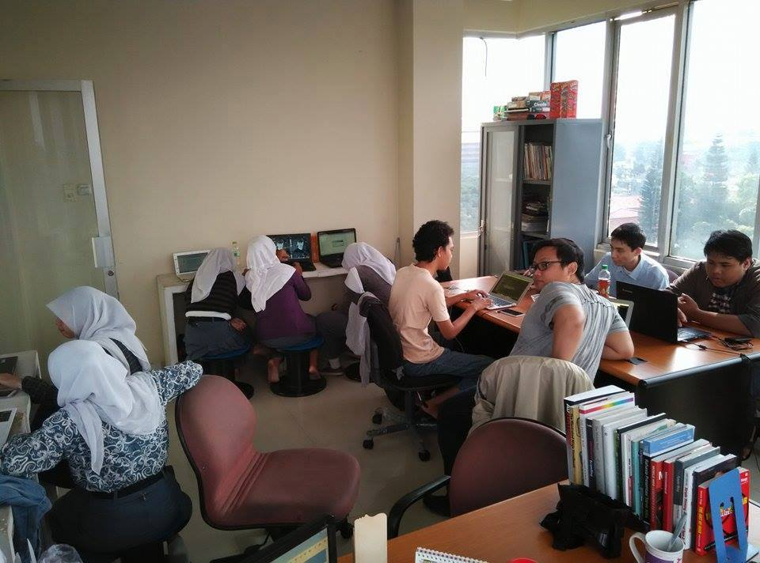
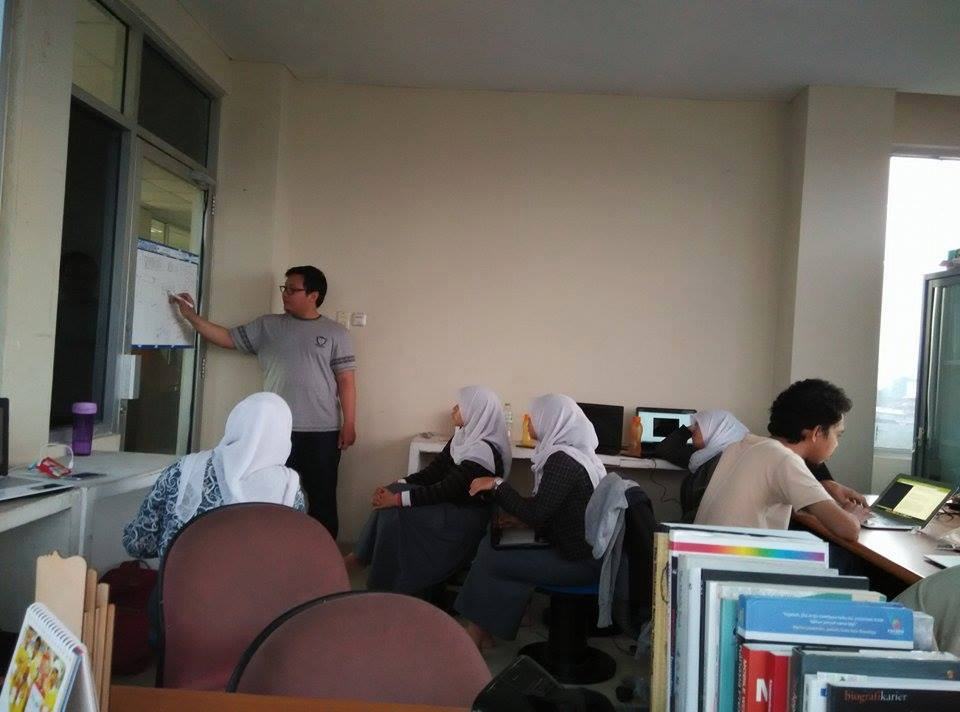
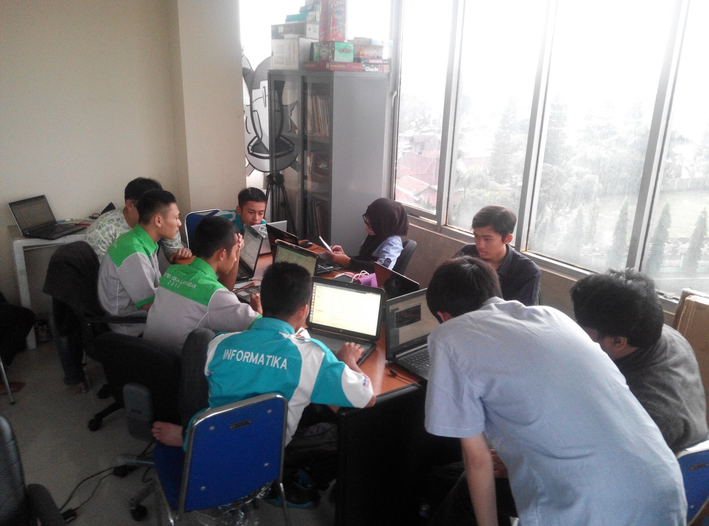
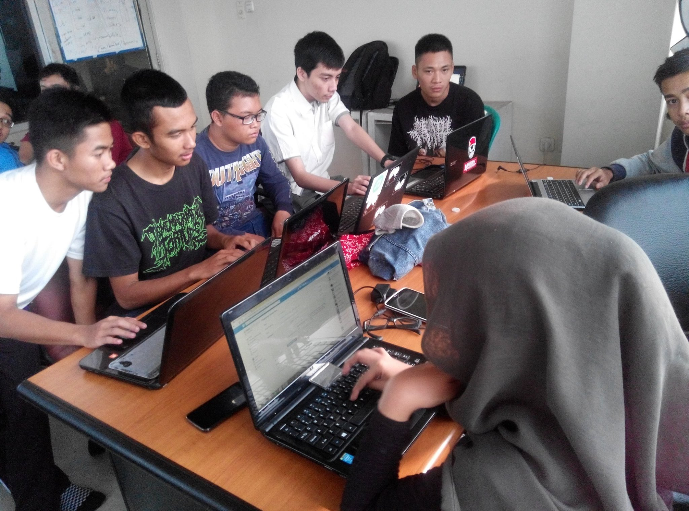
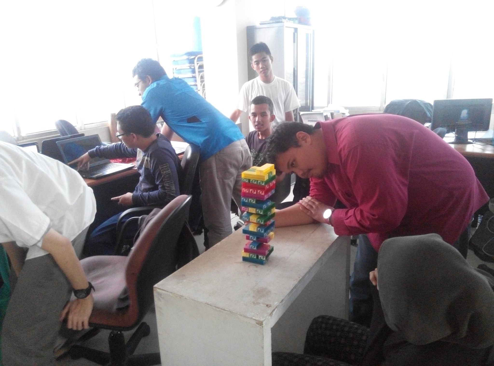

What we do in geek studio?
Hai ini posting kedua :D
Ini beberapa potret pencitraan anak-anak geek studio, kita dah pindah tempat beberapa kali di BITC, dikarenakan BITC sendiri merupakan gedung milik pemerintah kota cimahi, yang katanya untuk komunitas, but actually kita sendiri merasa agak sulit jg memanfaatkannya secara optimal.
Tapi kami tetap mengahasil beberapa karya di geek studio hahahahaa the show must go on right!
Ini kegiatan kita di awal awal, sekitar akhir Juni, ketika geek studio baru mulai berjalan :D

 Dulu hanya ada dua mentor, yaitun Hendri Karisma dan Eko Kurniawan Khannedy, dua-duanya co-founder PT. Starlabs Global Teknologi.
Awal ada 5 orang siswi SMKN 4 entah 40 bandung, lupa. Namun ternyata katanya gak kuat ikut training di geek studio jadi menyerah, tingga 2 orang mahasiswa magang dari Telkom University.
Nah selanjutnya gabung 5 siswa dari SMK di Tasik, namun 4 orang sama-sama menyerah, sehingga sisa tinggal satu orang dari Tasik yaitun Faridh.
Ini foto kegiatan sekitar awal Juli dan mulai memasuki Bulan Ramadhan hehee

 
Di geek studio, kita belajar menggunakan gnu/linux, karena ketika melakukan development untuk perangkat lunak, OS paling enak yang yang berbasis unix seperti gnu/linux atau mac hahahaa..
Windows untuk beberapa kasus mungkin bisa digunakan seperti ketika diharuskan menggunakan kinnect atau realsense atau karena device yang hanya support di diatas windows.
Kita juga belajar bagaimana menggunakan versioning controll seperti git menggunakan terminal, karena akan lebih cepat dan mudah.
Di geek studio kita pun terkadang main bareng atau menghadiri acara meet up sharing mengenai IT seperti IoT community atau pizza data community.
So, buat yang mau ikut gabung langsung aja datang ke tempat kita kumpul :D